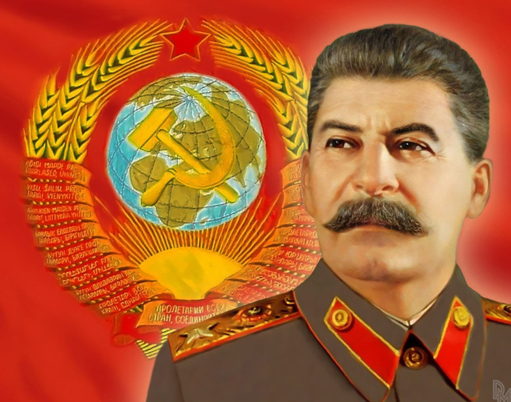

გენერალისიმუსის პორტრეტისთვის
საბჭოთა არმიაში ბევრად მეტი გამბედაობაა საჭირო უკან დასახევად, ვიდრე შეტევაზე გადასასვლელად.
ი.სტალინი
სტალინის ცხოვრების წვრილმანებს როცა ეცნობი და სწავლობ,რწმუნდები,რომ ის ჩვეულებრივი ადამიანი იყო. მასაც ისევე სციოდა და ცხელოდა,ისევე სწყინდა და უხაროდა,ისევე სწამდა და ეჭვი ეპარებოდა,როგორც ყველა მოკვდავს.
კაცობრიობის ისტორიაში ერთერთი მნიშვნელოვანი პოლიტიკური ფიგურა, ბევრისთვის ბოლომდე ამოუცნობი იოსებ სტალინი,
დღესაც რჩება ისტორიკოსების და ბიოგრაფების ამოუწურავი ინტერესის ობიექტი. სტალინმა არაორდინალური ხსოვნა დაუტოვა
ყველას, ვინც კი მის ეპოქაში ცხოვრობდა და მოწმე იყო ამ გენიალური ადამიანის ხელმძღვანელობით გაწეული გიგანტური
სამუშაოებისა და გამარჯვებებისა არა მხოლოდ ევრაზიის კონტინენტზე გადაჭიმულ უზარმაზარ ქვეყანაში, არამედ მსოფლიოს
ბევრ სახელმწიფოშიც.
გასაოცარია ამ უნიკალური ადამიანის ფენომენი, მისი პირადი თუ პოლიტიკურ-საზოგადოებრივი ცხოვრება, მხედართმთავრული,
დიპლომატიური თუ შენების, ანუ ყველა სფეროში ღრმად წვდომის ნიჭი. დღესაც აუხსნელია, როგორ შეძლო მან პირსისხლიანი
გერმანელი ფაშისტების დამარცხება მათივე ბუნაგში, როგორ ააცილა კაცობრიობას მესამე მსოფლიო ომი და როგორ აქცია ჩამორჩენილი
ქვეყანა მაღალგანვითარებული ეკონომიკისა და კულტურის მქონე ზესახელმწიფოდ.
უდიდესია სტალინის როლი საქართველოს წინაშეც - მენშევიკების მიერ საფრანგეთში გატაცებული ქართული საგანძურის საქართველოში
დაბრუნებაში, ქართული კულტურის, თეატრის, ლიტერატურისა და არქიტექტურის, სოფლის მეურნეობისა და მრეწველობის აყვავების საქმეში.
სტალინის დიადი გამარჯვებების გამო იდეოლოგიური მტრობით დაბოღმილი ადამიანები, ისტორიის ფალსიფიკატორები, ცდილობენ, ტვინი
გამოურეცხონ ახალგაზრდა თაობას, მიითვისონ სტალინის გამარჯვებები და დაამკვიდრონ თვალსაზრისი, რომ სტალინური ეპოქა ბოროტების
პერიოდი იყო. არადა, სწორედ ბოროტებას ებრძოდა სტალინი ღვთისგან მინიჭებული გენიით... თუმცა ისტორია ყველას მიუჩენს კუთვნილ
ადგილს.
ბოლო ათწლეულია, გაიხსნა საიდუმლო არქივები და უკვე ხელმისაწვდომია მასალები, რომლებიც უარყობს სტალინის მიმართ გავრცელებულ
ცილისწამებებს და ახალგაზრდა თაობას აქვს საშუალება, სიმართლე შეიტყოს და სწორი წარმოდგენა ჰქონდეს სტალინის გენიით მიღწეულ
დიად გამარჯვებებზე.
სტალინი და თანამედროვეობა
დღეს თანამედროვე ადამიანს შეუძლებელია, არაფერი ჰქონდეს წაკითხული ან მოსმენილი სტალინის შესახებ. ზოგს ისიც კი ჰგონია, რომ ყველაფერი იცის ამ პიროვნებაზე. არადა, იცით, რომ სტალინი ერთადერთი რაინდია კაცობრიობის ისტორიაში, რომელიც მთელი სიცოცხლე ეთამაშებოდა სიკვდილს, არაერთგზის გაიქცა ციხიდან თუ გადასახლებიდან... ებრძოდა თანასწორობისა და სოციალური სამართლიანობის მანამდე უძლეველ მტრებს, ებრძოდა ფაშიზმს კაცობრიობა ჰიტლერელთა მონობისგან იხსნა? მოკლედ, გგონიათ ყველაფერი იცით მის შესახებ? მერწმუნეთ ცდებით... თქვენ ნამდვილად ვერ ხედავთ იმ კეთილისმყოფელ კვალს, რომელიც მან დაატყო კაცობრიობას; ვერ გრძნობთ მის რეალურ პიროვნულ სიდიადეს, როლსა და ადგილს მსოფლიო ისტორიაში.
ხრუშჩოვის მზაკვრული გეგმა
სახელმწიფოს სათავეში ხრუშჩოვის პოზიციების გამაგრების მომენტისათვის, კერძო კაპიტალის მესვეურთ, უკვე შეეძლოთ საბჭოთა კავშირში კონტრრევოლუციის წამოწყება.შეეძლოთ, მაგრამ იმხანად ქვეყანაში სოციალური უსამართლობის დამკვიდრება უთუოდ გამოიწვევდა იდეალებით შთაგონებული საბჭოთა ხალხის უკიდურეს აღშფოთებას.
ისე კაცმა რო თქვას სტალინიზმის (სოციალიზმის) დამხობაში ხრუშჩოვს მეტი წვლილი მიუძღვის, ვიდრე გორბაჩოვს
იმ დროიდან დაიწყო კომუნიზმის ნგრევა, უბრალოდ ბრეჟნევის დროს შენელდა ეს პროცესი, ამიტომ უნდა შეწყდეს
საერთო სახალხო განცვიფრება იმის გამო, რომ ხრუშჩოვს ოკეანის გაღმა კეთილად მოიხსენიებენ.
კონტრრევოლუციისათვის საჭირო იყო დრო, საბჭოთა ხალხის თანდათანობით გარყვნა და ამ პროცესს, როგორც იცით,
მთელი 30 წელი დასჭირდა. კონტრრევოლუციის წამოწყების დღისთვის იმჟამინდელი საბჭოთა ხალხი და სტალინისდროინდელი
საბჭოთა ხალხი ზნეობრივად ცასა და დედამიწასავით იყვნენ დაშორებულნი ერთმანეთს და მაინც... კონტრრევოლუციის
წინა და შემდგომ პერიოდში, დაახლოებით 10-15 წლის განმავლობაში, თანამედროვეები კიდევ უფრო დაშორდნენ სტალინის
პერიოდის წინაპრებს.
ვფიქრობ, დრო მოვიდა და უნდა დავუბრუნდეთ სტალინის სიცოცხლის ბიოგრაფიის გადმოცემას, რომელშიც არ იქნება სხვა
პიროვნებებთან ურთიერთობა-დამოკიდებულების ფაქტის აღნიშვნა, რადგან იგი იმ უტყუარ მოვლენებზე იქნება დაფუძნებული,
რომლებითაც სტალინმა წვლილი შეიტანა კაცობრიობის გაკეთილშობილებაში და უმნიშვნელოვანესი კვალი დატოვა მსოფლიო
ისტორიაში.
სტალინი --- ადამიანი, რომელმაც უამრავი სასწაული მოახდინა, მათ შორის წარმოუდგენელიც:
* შეცვალა დედამიწაზე ცხოვრების ყველა წესი და კანონი არსებითად გარდაქმნა სამყარო;
* შეცვალა პიროვნების, ერებისა და ხალხების წარმოდგენები, შეხედულებები და საერთოდ მსოფლმხედველობა;
* შექმნა საჭოთა ხალხი;
* შექმნა ამაღლებული ზნეობის ,საკაცობრიო იდეალების მოტრფიალე საზოგადოება, სადაც დანაშაული რეალურად
გახდა... გადმონაშტი სადაც ერთხელ და სამუდამოდ აღიკვეცა სეპარატისტული კერები ქვეყნის შიგნით, ერებს შორის
დამყარდა ნამდვილი ძმობა და ურთიერთპატივისცემა;
* დედამიწის საბჭოთა ნაწილში დაამყარა დემოკრატია არსითა და ფორმით, დაამყარა თანასწორობის, სოციალური
სამართლიანობისა და ერთსულოვნების პრინციპები;
* გაათავისუფლა ხალხები კერძო საკუთრების მონოპოლიის დისკრიმინაციისგან;
* შრომა, ცოდნა და ტალანტი აქცია ყველაზე მნიშვნელოვან ღირსებად, ანუ ნიჭიერება უფრო მაღლა დასვა, ვიდრე
ფული და ქონება;
* გაანთავისუფლა რუსეთის ხალხები იმპერიის დიქტატისგან, ამ ხალხებს შეუქმნა სახელმწიფოებრიობა მოკავშირე და
ავტონომიური რესპუბლიკების უფლებებში, თანასწორუფლებიანობის საწყისზე შექმნა სოციალური რესპუბლიკების კავშირი;
* შექმნა უპრობლემო ხალხი;
* ათეიზმით გაანელა სხვადასხვა რელიგიური აღმსარებლობის ხალხების ისტორიული დაპირისპირება;
* შექმნა რაინდული საშინაო და საგარეო პოლიტიკა, რომელიც ზნეობრივ სიწმინდეზე იქნა დაფუძნებული;
* აქცია საერთაშორისო ურთიერთობები ჰუმანურ-დემოკრატიულად;
* აპოგეამდე მიიყვანა ადამიანის უფლებების დაცვა;
* აიძულა კერძო კაპიტალის სახელმწიფოთა მმართველები, სერიოზულად ეფიქრათ საკუთარი მოქალაქეების
სოციალურ დაცვაზე;
* შექმნა ყველა პირობა და მართალი იდეოლოგია ინდივიდისა და საზოგადოების ინტერესების დამთხვევისთვის
და პირველად კაცობრიობის ისტორიაში მოახდინა მათი ინტერესების დამთხვევა;
* შექმნა საბჭოთა ხალხების ფორმით ეროვნული და შინაარსით სოციალისტური კულტურა;
* დააკანონა ერთა შორის ურთიერთპატივისცემის ატმოსფერო, დაახლოვა ეროვნული კულტურები ერთმანეთს;
* შექმნა საზოგადოება: ერთი ყველასათვის, ყველა ერთისათვის;
* შექმნა კაცობრიობის არსებობის ისტორიაში ყველაზე წმინდა და ამაღლებული ზნეობის საზოგადოება;
* გაანთავისუფლა ადამიანთა გრძნობები;
* გაანადგურა კერძო კაპიტალის ჰეგემონიზმის იდეოლოგია; დაამტკიცა, რომ საზოგადოების განვითარების
ტრადიციული, კერძო საკუთრების მონოპოლიის კანონები ექვემდებარება შეცვლას;
* როგორც საბჭოეთში, ასევე მის ფარგლებს გარეთ, რეალურად აქცია თანასწორობის, ერთობისა და სოციალური
სამართლიანობის იდეალები;
* გაანთავისუფლა ხალხები რელიგიური მომნუსხველობისგან;
* პირველად დედამიწაზე შექმნა საზოგადოება ხალხების, ერების, პიროვნების ექსპლუატაციის გარეშე;
* კაცობრიობა პირველად შეაყენა დემოკრატიული განვითარების გზაზე, რადგან კერძო საკუთრების მონოპოლიის
სამყაროს გვერდით წარმოიშვა ნაციონალიზებული საკუთრების მონოპოლიის სამყარო, რომელიც სიცოცხლისუნარიანი
გამოდგა;
* გაანადგურა გერმანული ფაშიზმი და იხსნა კაცობრიობა სამუდამო მონობისგან.
დანანებით უნდა აღინიშნოს, რომ სოციალიზმის დივერსიული დამხობით, საბჭოთა კავშირში (შემდგომ უკვე პოსტსაბჭოთა
სივრცე) დაიკარგა კაცობრიობის დემოკრატიული განვითარების შესაძლებლობა.
სტალინი როგორც მრავალმხრივი პიროვნება
მინდა, დაგარწმუნოთ, რომ, როდესაც სტალინის ფენომენს ეცნობით, საქმე გაქვთ არა ჩვეულებრივი ადამიანის შემოქმედებასთან, არამედ სხვა, უფრო დიდ განზომილებებსა და სულიერ სიმაღლეებთან... სტალინის მსგავსი ადამიანი, მეცნიერული, პრაქტიკული და ადამიანური თვალსაზრისით, დედამიწაზე არ დაბადებულა.
კუიბიშევის (ამჟამად ჟიგულევის) ჰესი
1936 წელს სტალინმა გადაწყვიტა, კუიბიშევში აშენებულიყო გიგანტური ჰიდროელექტროსადგური, რისთვისაც თავისთან მიიწვია საბჭოთა ჰიდროტექნიკოსი, აკადემიკოსი სერგეი ჟუკი.
სტალინი, როდესაც ზუბალოვოს აგარაკის კომენდანტ ეფიმოვს წერილს სწერდა, პარალელურად, აკადემიკოს ნიკოლაი ციცინს
ხორბლის მრავალწლიანი ჯიშის გამოყვანაზე ესაუბრებოდა, მისაღებში კი ჰიდროტექნიკის სპეციალისტი, აკადემიკოსი სერგეი
ჟუკი ელოდებოდა, კუიბიშევის ელექტროსადგურის ტექნოლოგიური პროექტის გეგმის მისაღებად.
როცა სტალინი გარკვეული პერიოდის შემდეგ შეხვდა ჟუკს მეცნიერს თავისი მოსაზრებები გააცნო, დასძინა:
--- თქვენ ნუ მოცდებით იმის გარკვევაზე, ვარგა თუ არა ეს ადგილი ჰიდროელექტროსადგურისთვის, ეს ჩვენ უკვე გადავწყვიტეთ
ელექტროსადგური იქ უნდა აშენდეს და იცით, რატომ? ელექტროსადგურში მოხმარებული წყალი უნდა გამოვიყენოთ მოსარწყავად
და ამისთვის ის უფრო ადვილად მიიღებს წყალს ვოლგიდან, ამასთანავე, აქედან უფრო იოლია ელექტროენერგიის გადაცემა სხვა
რეგიონებისთვის. გარდა ამისა, ამ ელექტროსადგურისთვის საჭირო არხის სამარის არხთან შეერთებით 140 კილომეტრით მოკლდება
სამდინარო გზა ვოლგაზე, რომელიც მნიშვნელოვან ეკონომიკურ ეფექტს მოგვცემს. სწორედ ამ საკითხების გადასაწყვეტად მოგიწვიეთ
თქვენ.
--- მჭირდება ათი დღე და თანხმობა კუიბიშევში გამგზავრებაზე, --- უპასუხა ჟუკმა.
--- თანახმა ვარ, წაბრძანდით კუიბიშევში.
კუიბიშევში ჩასული მეცნიერი საფუძვლიანად გაეცნო ჰესისთვის საჭირო ადგილმდებარეობას და შეეცადა, სპეციალისტებთან ერთად
განესაზღვრა, რა სიდიდის რაბები უნდა გაჭრილიყო. ზოგიერთი მეცნიერისა და პრაქტიკოსის აზრით, რაბები გიგანტური უნდა
ყოფილიყო, ზოგიერთის აზრით კი --- საშუალო. ჟუკი დაუკავშირდა სტალინს და მოახსენა, რას ფიქრობდა რაბების ზომის შესახებ.
სტალინმა უპასუხა:
--- თქვენ მაგაზე ნუ შეწუხდებით, ეს გარკვეულია.
სტალინმა ზეპირად უთხრა რაბის სიღრმის, ფსკერისა და ზედაპირის ზომები.
ზუსტი გაანგარიშების შემდეგ, --- იგონებს სერგეი ჟუკი, --- ჩემს გაოგნებას საძღვარი არ ქონდა, როცა ჩემი
მონაცემები სტალინის ნათქვამ მონაცემებს დაემთხვა. ყველა გიგანტური მშენებლობის გეგმა და პროექტი ხომ სტალინის კაბინეტში და
მის სამუშაო მაგიდაზე იქმნებოდა.
1937 წელს სტალინის კაბინეტში პროექტის განხილვა მიმდინარეობდა. კედელზე კუიბიშევისა და საბჭოთა კავშირის დიდი რუქები ეკიდა.
რუკასთან ჯოხით ხელში სტალინი იდგა და პროექტზე საუბრობდა. პირველ რიგში, მან ის ადგილები მოხაზა, რომლებიც ჰესის მიერ
მოხმარებული წყლით უნდა მორწყულიყო. შემდეგ ელექტროენერგიაზე გადავიდა და განსაზღვრა ის ცენტრალური რაიონები, რომლებსაც
ელექტროენერგია კუიბიშევიდან უნდა მიეღოთ.
როდესაც სტალინს ვუყურებდი, ვხედავდი, რომ საუბარი არ იყო აშენდებოდა თუ არა ჰესი. ჰესი აუცილებლად
აშენდებოდა!..
სტალინის თვითდაჯერებულობა ჩვენზეც გადმოდიოდა და ჩვენი შრომის ნაყოფიერება და მონდომება განუხრელად იზრდებოდა.
ვმუშაობდით დღე და ღამე, შეუსვენებლად, ხალისითა და აღფრთოვანებით.
1938 წელს კვლავ გამომიძახეს სტალინთან. მაგიდაზე გაშლილი იყო რუკები, სქემები, ნახაზები, მაკეტები. ხანგრძლივ საუბარში სტალინმა
ყველა წვრილმანი განიხილა და საბოლოოდ გადაწყვიტა მშენებლობის დაწყება. იმ საღამოს სტალინმა დაამტკიცა მშენებლობის გეგმა და
სადგური ორ ნაწილად გაყო. უნდა აშენებულიყო ორი დამოუკიდებელი ელექტროსადგური: ერთი --- ,,პერევოლოკაში",
მეორე --- ჟიგულის მაღლობთან, წყალსაცავის გვერდით.
კუიბიშევის ჰესი ექსპლუატაციაში 1950 - იან წლებში შევიდა.
კონსტრუქტორი ვალერი გრაბინი თავის მოგონებებში წერს: ,,სტალინი ბლინდაჟიდან ამოწმებდა ჩემი ქვემეხის
ვარგისიანობას და თვალყურს ადევნებდა გამოსაცდელად გამოტანილ ქვემეხებიდან სროლის შედეგებს. როდესაც ბოლო ქვემეხმაც გაისროლა,
სტალინმა წამოიძახა ,,მორჩა" და ამბრაზურას მოშორდა. მომიბრუნდა და დამისვა შეკითხვები:
--- რა სიშორეზე იღებს მიზანს ქვემეხი? როგორია ყველა სახის ჭურვის მოქმედება მიზნის მიმართ? როგორია ჯავშანის მსხვრევის შედეგი, ზარბაზნის სიმყარე და ა.შ.
ბლინდაჟიდან ამოვედით და სვლა განვაგრძეთ. ჩაფიქრებულმა სტალინმა თქვა:
--- იარაღი კარგია, მაგრამ ის უნდა გვქონდეს ბევრი და უნდა გვქონდეს დღესვე. ზოგიერთი საკითხი კი ჯერ კიდევ გადაუჭრელია.
რაც მთავარია, გვყავს ჩვენი კადრი.
ჩვენთან ერთად მოდიოდა კონსტრუქტორი მახანოვი. არც მე და არც მას ხმა არ ამოგვიღია, რადგან სტალინი ჩვენ არ გველაპარაკებოდა,
ის ხმამაღლა ფიქრობდა. რამდენიმე ნაბიჯის შემდეგ სტალინი შეჩერდა და მახანოვს მიუბრუნდა: --- ამხანაგო მახანოვ, გააკრიტიკეთ
გრაბინის ქვემეხი!
ამას არცერთი არ ველოდით. ჩაფიქრებულმა კონსტრუქტორმა უპასუხა: --- გრაბინის ქვემეხზე ძვირის თქმა არ შეიძლება.
ჩემი ჯერიც დადგა.
--- ამხანაგო გრაბინ გააკრიტიკეთ მახანოვის ქვემეხი!
ვუპასუხე, რომ მახანოვის ქვემეხს აქვს სამი ნაკლი. მე მოკლედ დავახასიათე სამივე და დავუმატე, რომ ამ სამი ნაკლის გამოსწორების გარეშე ქვემეხის გამოყენება არასასურველია. გავჩუმდი. დუმდნენ სტალინიცა და მახანოვიც. არ ვიცოდი როგორ მიიღებდა ჩემს
სიტყვებს ან ერთი, ან მეორე. ვღელავდი... ცოტა ხნის დუმილის შემდეგ სტალინმა მომმართა:
--- აბა ახლა შენი ქვემეხი გააკრიტიკე.
მე მოვახსენე, რომ ჩემს ქვემეხს აქვს სხვადასხვა ნაკლი, თუმცა არა ისეთი მნიშვნელოვანი, რომ არ ივარგოს საბძოლო მოქმედებებისას, მაგრამ, თუ ნაკლოვანებები გამოსწორდება, ეს კიდევ უფრო გაზრდის მის ბრძოლისუნარიანობას.
სწორედ გრაბინის ქვემეხი აღმოჩნდა საუკეთესო მეორე მსოფლიო ომში. 1942 წლის 1 იანვარს სტალინმა გრაბინს სტალინური
პრემიით დაჯილდოებისას განუცხადა: ,,თქვენმა ქვემეხმა იხსნა რუსეთი!"
მიხეილ კოშკინი მსოფლიოში სახელგანთქმული ტანკის --- ტ-34-ის კონსტრუქტორია. ერთხელ ის კრემლში ესწრებოდა
პოლიტბიუროს სხდომას, რომელზეც ამ ტანკზე დამონტაჟებული ქვემეხის ლულის საკითხი იხილებოდა.
ვოროშილოვს, რომელიც ფეხზე იდგა და ხელში პოლიტბიუროს დადგენილების პროექტი ეჭირა, სტალინი მიუახლოვდა და
ქაღალდის ფურცელი გამოართვა. ჩაიკითხა და ჯავშნიანი მანქანების სამმართველოს უფროსს --- ფედერენკოს მიმართა:
--- რა ტაქტიკურ-ტექნიკური მაჩვენებლებით გამოირჩევა ახალი ლულა ძველისგან?
ფედერენკომ დაიწყო ახსნა, რომ ახალი ლულა მხოლოდ ჩამოსასხმელ საამქროში მზადდება, მაშინ, როდესაც ძველი ლულა სხვადასხვა საამქროში მზადდებოდა.
--- მე გეკითხებით, --- გაუმეორა სტალინმა, ---ტაქტიკურ-ტექნიკურ განსხვავებაზე და არა დამზადების ტექნოლოგიაზე, ვინ არის დაკავებული თქვენთან სამხედრო ტექნიკით?
ფედერენკომ გენერალი ლებედევი დაასახელა.
--- აქ არის ლებედევი?
--- აქ ვარ, --- უპასუხა გენერალმა.
--- მე თქვენ გეკითხებით, რა ტაქტიკურ-ტექნიკური მახასიათებლებით განსხვავდება ახალი ლულა ძველისგან.
ლებედევმა იგივე გაიმეორა, რაც მისმა უფროსმა მოახსენა სტალინს. სტალინმა მრისხანედ შეხედა გენერალს და უთხრა:
--- თქვენ სად მსახურობთ --- არმიაში თუ მრეწველობაში? მესამედ გეკითხებით: რა ტაქტიკურ-ტექნიკური განსხვავებაა ძველსა და ახალ
ლულებს შორის. თქვენ კი მელაპარაკებით მისი ჩამოსხმის ტექნოლოგიაზე, ხომ არ სჯობს, წარმოებაში გადახვიდეთ.
,,ვიფიქრე --- წერს კოშკინი --- რომ პოლიტბიუროზე ეს საკითხი ჩავარდებოდა, რადგან მომხსენებლები საქმის კურსში არ იყვნენ,
ხოლო ძველის ახლით შეცვლა აუცილებელი და საჭიროა. სწორედ ეს მაწუხებდა, როდესაც ხელი ავწიე და სტალინს სიტყვა ვთხოვე.
სტალინმა ჩემ მხარეს გამოიხედა და მკაცრად თქვა:
--- მე კითხვა დავსვი ტაქტიკურ-ტექნიკურ მახასიათებლებზე.
--- სწორედ ამაზე მინდა, გიპასუხოთ, --- მივუგე მე.
--- შენ რა, სამხედრო ხარ?
--- არა.
--- რა გინდათ თქვათ? --- უკმაყოფილო სახით გადმომხედა სტალინმა. წამოვდექი და ვუთხარი:
--- სხვადასხვა ნაწილებისგან შემდგარ ლულას არასწორი ზედაპირი ჰქონდა და სიგლუვე აკლდა. ჰქონდა შედუღების ხაზები.
ახალი ლულა გლუვზედაპირიანია და ნაკერის გარეშე ერთიანად არის ჩამოსხმული, რის გამოც პოლიგონზე ლულის გამოცდის
შედეგები შთამბეჭდავია, სტალინს გადავაწოდე ფურცელი ორივე ლულის გამოცდის შედეგებით.
სტალინმა ბოლომდე ჩაიკითხა ინფორმაცია და ფურცელი უკან დამიბრუნა.
--- ეს განსხვავება უკვე სერიოზულია, --- განაცხადა სტალინმა.
ნელი ნაბიჯით გაიარა და უკან მობრუნებულმა იკითხა:
--- მითხარით, როგორ იმოქმედებს ახალი ლულა ტანკის წონასწორობაზე. კოსტრუქტორი აქ არის?
კონსტრუქტორი წამოდგა და თქვა:
--- თუ იმოქმედებს, იმოქმედებს უმნიშვნელოდ, ამხანაგო სტალინ.
--- უმნიშვნელოდ! ეს არ არის საინჟინრო ტერმინი. თქვენ თუ იანგარიშეთ?
--- არა, არ მიანგარიშია.
--- რატომ? ეს სამხედრო ტექნიკაა, კონსტრუქტორის თვალს ეს არ უნდა გამოეპაროს. რა წონით დააწვება იგი წინა ხიდს
და რა დატვირთვას გაუზრდის ან შეუმცირებს მას?
კონსტრუქტორმა უპასუხა:
--- უმნიშვნელოდ.
--- რას აიჩემე ეს ,,უმნიშვნელო". მითხარი, იანგარიშე თუ არა ეს?
--- არა ჩუმად უპასუხა კონსტრუქტორმა.
სტალინმა დადგენილების პროექტი მაგიდაზე დადო და განაცხადა:
--- გთავაზობთ, გადავდო ეს საკითხი, როგორც მოუმზადებელი. გავაფრთხილოთ ამხანაგები, რომ ისინი ასეთი პროექტებით
პოლიტბიუროზე არ უნდა გამოცხადდნენ. ახალი პროექტის მოსამზადებლად გამოვყოთ ჯგუფი, რომელშიც შევლენ: ფედორენკო,
შემდეგ ხელით ანიშნა მანქანა-ტრაქტორთა მრეწველობის მინისტრ აკოფოვზე და თითი გამოიშვირა ჩემკენ". --- ასე ამთავრებს
მიხეილ კოშკინი იმდღევანდელ მოგონებებს.
1933 წელს წითელი არმიის ცენტრალურ სასახლეში კონცერტი გაიმართა, რომელსაც მთავრობის სხვა წევრებთან ერთად სტალინიც
ესწრებოდა. კონცერტში მონაწილეობდა წითელი არმიის სამხედრო ანსამბლი ალექსანდროვის ხელმძღვანელობით, რომელიც 25
კაცისაგან შედგებოდა.
კონცერტის შემდეგ სტალინმა იხმო ანსამბლის ხელმძღვანელი, შეუქო საქმიანობა და დაუმატა, რომ რეპერტუარში უნდა შეიტანოს
რუსული ხალხური ცეკვები და სიმღერები, ხაზი გაუსვა ანსამბლის მცირერიცხოვნობას და ურჩია, წევრები დაემატებინა.
ალექსანდროვმა მორიდებით შენიშნა, რომ ანსამბლი სამხედროა და ამიტომ შეიკავა თავი ხალხური თვითშემოქმედებისგან, ხოლო
რიცხოვნობა ხარჯებთან არის დაკავშირებული.
--- გაბედულად იმოქმედეთ. პროგრამაში შეიტანეთ რაც შეიძლება მეტი ხალხური შემოქმედება, რიცხოვნობა კი გაზარდეთ! --- მისცა
დავალება სტალინმა.
კრემლში გამართული კონცერტის შემდეგ, რომელზეც ანსამბლმა შეასრულა სიმღერა ,,ვოლჟსკაია ბურლაცკაია", სტალინმა თავის ლოჟაში
იხმო ალექსანდროვი და უთხრა: --- შესანიშნავი სიმღერაა, მაგრამ რაღაც აკლია.
--- ვერ ვხვდები, რა აკლია, ამხანაგო სტალინ, --- უპასუხა ალექსანდროვმა.
--- თქვენ კომპოზიტორი ხართ, დაფიქრდით, მიხვდებით, --- დაარიგა სტალინმა.
შინ მისული კომპოზიტორი როიალს მიუჯდა და რამდენიმეჯერ დაუკრა მელოდია. ბოლოს აღმოაჩინა, რომ შეცდომა მართლა იყო
დაშვებული. მეორე სტროფი ბოლოში გადაიტანა და ნახევარი ტონით ასწია. კომპოზიტორი გაკვირვებას ვერ მალავდა, რატომ ვერ
შენიშნა თვითონ ეს შეცდომა, რომლის გასწორებამაც სიმღერას სულ სხვა ჟღერადობა და ტემპერამენტი შესძინა.
ერთ-ერთ კონცერტზე ანსამბლმა მარშის სტილში შეასრულა სიმღერა ,,შეკაზმეთ, ბიჭებო, ცხენები", სტალინმა ხელმძღვანელს შენიშვნა
მისცა.
--- მგონია, რომ ეს სიმღერა არა მარშის, არამედ ნელ ტემპში უნდა იმღეროთ, ეს ხომ გაშლილი სტეპის სიმღერაა?!
მე-17 ყრილობის შემდეგ კრემლში გამართულ კონცერტზე ანსამბლმა შეასრულა სიმღერა პარტიაზე ლებედევ-კუმაჩის ტექსტის მიხედვით.
სტალინის თხოვნით, სიმღერა გაიმეორეს, მაგრამ უნდა გაეთვალისწინებინათ სტალინის თხოვნა --- ემღერათ უფრო საზეიმოდ,
როგორც ჰიმნი.
სტალინს სიმღერის მეორე ვარიანტი ძალიან მოეწონა და ანსამბლს სთხოვა, მისთვის დაერქმიათ არა ,,სიმღერა პარტიაზე", არამედ
,,ბოლშევიკური პარტიის ჰიმნი".
ერთ-ერთ კონცერტზე, რომელზეც სტალინი და ვოროშილოვი ესწრებოდნენ, ალექსანდროვის ანსამბლის წამყვანმა მოცეკვავემ სახუმარო
ხალხური ცეკვა აკრობატული ილეთებით შეასრულა. ადრე მოწონებული ეს ნომერი ამჯერად მაყურებელმა არ მიიღო. არ მოიწონეს
მთავრობის ლოჟაშიც. ჩაფიქრებული ალექსანდროვი უფრო აღელდა. როდესაც კულისებში ვოროშილოვი შევიდა (როგორც ჩანს სტალინის
დავალებით).
--- რატომ არ მოგეწონათ, ამხანაგო კლიმენტ ეფრემის ძევ, ეს ცეკვა? --- იკითხა ალექსანდროვმა.
--- არიან კომიკოსები და არიან შერეკილები. თქვენი მოცეკვავე, რომელიც სახუმარო ცეკვას ასრულებდა სცენაზე, გამოიყურებოდა არა როგორც
კომიკოსი, არამედ როგორც შერეკილი. სად ნახა თქვენმა მოცეკვავემ აკრობატული ილეთებით შესრულებული ხალხური ცეკვა?
,,1943 წელს, პირველი გამარჯვების აღსანიშნავი სალუტის შემდეგ კონცერტი გავმართეთ, მთელი შემადგენლობითა და მთელი მონდომებით
შევასრულეთ ,,ბოლშევიკური პარტიის ჰიმნი", ოღონდ ნახევარი ტემპით ნელა და ნახევარი ტონით დაბლა. სტალინს მოეწონა სიმღერა
და გაღიმებულმა თქვა: ,,ეს იქნება საბჭოთა კავშირის ჰიმნი". --- იგონებს გიორგი ალექსანდროვი.
სტალინის მიერ შექმნილი და მოწონებული ეს მელოდია დღესაც ქუხს და ამცნობს დედამიწას სტალინისა და რუსეთის არსებობას.
ყოველივე ზემოთ აღნიშნული ადასტურებს იმას რომ სტალინი ზედმიწევნით და ღრმად ერკვეოდა ყველა სფეროში.
სტალინი და უკრაინა
1917 წლის ოქტომბრის რევოლუციის შემდეგ უკრაინის რადამ უარი განაცხადა, ეცნო საბჭოთა მთავრობა და მასთან აშკარა დაპირისპირების გზას დაადგა. ლენინმა რამდენიმე კომპრომისული ნაბიჯი გადადგა უკრაინელების მიმართ, მაგრამ, რომ იტყვიან, მადა ჭამაში მოდისო და რადა დასავლეთის გავლენითა და მათი ინტერესების სასარგებლოდ, უფრო მწვავედ დაუპირისპირდა საბჭოეთს. ათასი ჯურის, ბაზრისა თუ მადნის მაძიებელი თავის პოზიციებს იმაგრებდა, უკრაინა კი თანდათან ეშვებოდა პოლიტიკურ და ეკონომიკურ ქაოსში. 1917 წლის იანვარში ტურუხანსკში ტუსაღის ნარზე წამოწოლილი სტალინი ჩაფიქრებული უყურებდა ეზოს ძაღლს. ცხოველი იმ ჯამს ლოკავდა, რომლიდანაც ცოტა ხნის წინათ სტალინმა პატიმრის ულუფა მიიღო... გაივლის ექვსი თვე და რევოლუციაში გამარჯვებული უჭკვიანესი და უშიშარი კობა გადამწყვეტ ბრძოლას დაიწყებს უკრაინის რადის წინააღმდეგ...
უკრაინა 1917 წლის რევოლუციის შემდეგ
ან რადა გაწყვეტს კავშირს კალედინთან, ხელს გაუწოდებს საბჭოებს და გზას გაუხსნის რევოლუციურ ჯარებს დონის კონტრევოლუციური ბუდის წინააღმდეგ, --- და მაშინ უკრაინა და რუსეთის მუშები და ჯარისკაცები დაძმობილების ახალი აზვირთებით განამტკიცებენ თავიანთ რევოლუციურ კავშირს.
,,უკრაინის რადასთან ურთიერთობის გამწვავების დღიდან ამხანაგი უკრაინელებისაგან მრავალი წერილი და კითხვა ისმის რადასთან კონფლიქტის საკითხზე, ამიტომ შეიძლება, გამოვყოთ მათგან ისეთი საკითხები, რომლებიც ყველაზე ხშირად გვხვდება და პასუხი გავცეთ ისე გარკვეულად, რომ საეჭვო არაფერი დარჩეს. ეს საკითხები ყველასთვის ცნობილია:
- როგორ წარმოიშვა კონფლიქტი;
- რომელი პუნქტების გამო წარმოიშვა კონფლიქტი;
- რა ზომებია საჭირო კონფლიქტის მშვიდობიანი გზით მოსაგვარებლად;
- ნუთუ დაიღვრება მოძმე ხალხთა სისხლი;
რადასთან კონფლიქტს ამხანაგი უკრაინელები ზოგჯერ ისე ხატავენ, როგორც კონფლიქტს უკრაინელ ხალხთა და რუს ხალხს შორის, მაგრამ ეს სწორი არ არის. უკრაინელ და რუს ხალხებს შორის კონფლიქტი არ არის და არც შეიძლება იყოს. თავიანთი ინტერესებისთვის ბრძოლაში მათ არააქვთ და არც შეიძლება, ჰქონდეთ კონფლიქტი. რა თქმა უნდა, მშრომელთა მტრებისთვის ხელსაყრელია რადასთან კონფლიქტი წარმოადგინონ რუსი ხალხისა და უკრაინელი ხალხის კონფლიქტად, ვინაიდან საკითხის ასე წარმოჩენით ადვილი იქნება, ერთმანეთზე წააქეზონ მონათესავე ხალხების მუშები და გლეხები, ამ ხალხების მჩაგვრელთა სასიხარულოდ.
კონფლიქტი წარმოიშვა არა რუსეთისა და უკრაინის ხალხებს შორის, არამედ სახალხო კომისართა საბჭოსა და რადის გენერალურ სამდივნოს შორის.
რა საკითხზე წარმოიშვა კონფლიქტი?
ამბობენ, ცენტრალიზმისა და თვითგამორკვევის საკითხზე, რომ სახალხო კომისართა საბჭო არ ანებებს უკრაინელ ხალხს, ხელში აიღოს ძალაუფლება და თავისუფლად განსაძღვროს თავისი ბედი. მართალია თუ არა ეს? არა, არ არის მართალი! სახალხო კომისართა საბჭო სწორედ იმას ცდილობს, რომ უკრაინაში ძალაუფლება ეკუთვნოდეს უკრაინელ ხალხს, ესე იგი უკრაინელ მუშებსა და ჯარისკაცებს, გლეხებსა და მატროსებს. საბჭოთა ხელისუფლება, ე.ი. მუშათა და გლეხთა, ჯარისკაცთა და მატროსთა ხელისუფლება მემამულეებისა და კაპიტალისტების გარეშე --- სწორედ ეს არის სახალხო ხელისუფლება, რომლისთვისაც იბრძვის სახალხო კომისართა საბჭო. გენერალურ სამდივნოს არ სურს ასეთი ხელისუფლება, ვინაიდან არ სურს, დარჩეს მემამულეებისა და კაპიტალისტების გარეშე. ამაშია საკითხის არსი და არა ცენტრალიზმში.
სახალხო კომისართა საბჭო თავიდანვე იდგა და კვლავაც დგას თავისუფალი თვითგამორკვევის თვალსაზრისზე. მას იმის საწინააღმდეგოც კი არაფერი აქვს, რომ უკრაინელი ხალხი დამოუკიდებელ სახელმწიფოდ გამოიყოს. მან ეს რამდენჯერმე განაცხადა ოფიციალურად. მაგრამ, როცა ხალხის თვითგამორკვევას კალედინის თვითმპღრობელობაში ურევენ, როცა რადის გენერალური სამდივნო ცდილობს, კაზაკთა გენერლების კონტრევოლუციური თარეში სახალხო თვითგამორკვევის გამოხატულებად წარმოადგინოს, სახალხო კომისართა საბჭოს არ შეუძლია, არ შენიშნოს, რომ გენერალური სამდივნო თვითგამორკვევას თამაშობს და ამ თამაშით ფარავს თავის კავშირს კალედინსა და როძიანკოსთან.
ჩვენ მხარს ვუჭერთ ხალხთა თვითგამორკვევას, მაგრამ იმის წინააღმდეგი ვართ, რომ თვითგამორკვევის დროშით, კონტრაბანდულად გააპარონ თვითმპყრობელობა კალედინისა, რომელიც ჯერ კიდევ გუშინ ფინეთის სისხლში ჩახრჩობას მოითხოვდა.
ამბობენ, რომ კონფლიქტი წარმოიშვა უკრაინის რესპუბლიკის საკითხზე, რომ სახალხო კომისართა საბჭო არ ცნობს უკრაინის რესპუბლიკას. მართალია თუ არა ეს? არა არ არის მართალი! სახალხო კომისართა საბჭომ ოფიციალურად ცნო უკრაინის რესპუბლიკა. იგი მზად არის, ცნოს რუსეთის ყოველი ნაციონალური ოლქის რესპუბლიკა, თუ ეს ამ ოლქის მშრომელ მოსახლეობას სურს. იგი მზად არის, ცნოს ჩვენი ქვეყნის პოლიტიკური ცხოვრების ფედერაციული წყობა, თუ ამას რუსეთის ოლქების მშრომელი მოსახლეობა მოისურვებს.
მაგრამ, როცა სახალხო რესპუბლიკას კალედინის სამხედრო დიქტატურაში ურევენ, როცა რადის გენერალური სამდივნო ცდილობს, რესპუბლიკის ბურჯებად წარმოგვიდგინოს მონარქისტები --- კალედინი და როძიანკო, სახალხო კომისართა საბჭოს არ შეუძლია, არ თქვას, რომ გენერალური სამდივნო რესპუბლიკობანას თამაშობს და ამ თამაშით ფარავს თავის დამოკიდებულებას ჯიბესქელ მონარქისტებთან. ჩვენ უკრაინის რესპუბლიკის მომხრე ვართ, მაგრამ იმის წინააღმდეგი ვართ, რომ რესპუბლიკის დროშით დაფარონ ხალხის დაუძინებელი მტრები --- კალედინი და როძიანკო...
ამისათვის კი არ დავიწყეთ რევოლუცია მემამულეებისა და კაპიტალისტების წინააღმდეგ, რომ იგი კალედინებთან კავშირით დავამთავროთ; იმისათვის არ დაუღვრიათ სისხლი მუშებსა და ჯარისკაცებს, რომ სამოწყალოდ დანებდნენ როძიანკოებს.
ორში ერთია
ან რადა გაწყვეტს კავშირს კალედინთან, ხელს გაუწოდებს საბჭოებს და გზას გაუხსნის რევოლუციურ ჯარებს დონის კონტრევოლუციური ბუდის წინააღმდეგ, --- და მაშინ უკრაინა და რუსეთის მუშები და ჯარისკაცები დაძმობილების ახალი აზვირთებით განამტკიცებენ თავიანთ რევოლუციურ კავშირს;
ან რადა არ მოისურვებს კალედინთან კავშირის გაწყვეტას, გზას არ გაუხსნის რევოლუციურ ჯარებს, --- და მაშინ რადის გენერალური სამდივნო მიაღწევს იმას, რის მიღწევასაც ამაოდ ცდილობდნენ ხალხის მტრები, ე.ი. მოძმე ხალხთა სისხლის დაღვრას.
რადა ეყრდნობა იმ პრინციპს, რომ ძალაუფლება გაიყონ ბურჟუაზიამ, პროლეტარიატმა და გლეხობამ. საბჭოები კი ასეთ გაყოფას უარყოფენ და მთელ ძალაუფლებას აძლევენ ხალხს. ამიტომაა, რომ რადა ლოზუნგს --- ,,მთელი ძალაუფლება საბჭოებს" ( ე.ი. ხალხს) უპირისპირებს თავის ლოზუნგს --- ,,მთელი ძალაუფლება ქალაქისა და ერთობის თვითმმართველობებს" ( ე.ი. ხალხს და ბურჟიაზიას ). სახალხო კომისართა საბჭოს არ შეუზლია, ხელი აიღოს კალედინის წინააღმდეგ ბრძოლაზე. კალედინის კონტრევოლუციური ბუდე უნდა დაინგრეს. ეს გარდაუვალია! თუ რადამ ხელი შეუშალა ჩვენს წინსვლას კალედინის წინააღმდეგ და დაიფარა იგი, მაშინ კალედინის წინააღმდეგ მიმართული დარტყმები რადას მოხდება. სახალხო კომისართა საბჭო არ მოერიდება გადამწყვეტ ბრძოლას რადის წინააღმდეგ, ვინაიდან მისთვის საიდუმლო არ არის, რადას ფარული კავშირი აქვს კალედინთან.
სახალხო კომისართა საბჭოს ხელში ჩაუვარდა დაშიფრული დეპეშა, საიდანაც ირკვევა, რომ რადა უშუალოდ დაკავშირებულია საფრანგეთის მისიასთან, რათა გაზაფხულამდე გააჭიანუროს ზავის დადება საფრანგეთის მისიის მეშვეობით კალედინთან. ეს კაავშირი მიმართულია რევოლუციის წინააღმდეგ, ეს კავშირი უნდა დაირღვეს და დაირღვევა კიდეც...
ჩვენ არ გვინდა, შევეხოთ ,,ჩვენი მოკავშირეების" სამხედრო მისიების ქცევას, მათი როლი საკმაოდ გამოკვეთილია.
ეჭვი არ გვეპარება, რომ ,,მოკავშირეთა" მოძალადურ წამოწყებას ჩაშლის რუსეთის ხლხთა ბრძოლა დემოკრატიული ზავისთვის, მისიებს ისე უჭირავთ თავი, თითქოს ცენტრალურ აფრიკაში იყვნენ. მაგრამ ,,მოკავშირენი" მალე დარწმუნდებიან, რომ რუსეთი ცენტრალური აფრიკა არ არის...
აქ ჩვენ უმთავრესად გვაინტერესებს ის არასახარბიელო როლი, რომელიც რადამ იკისრა.
ძალიან ხშირად ამხანაგ უკრაინელებს აქვთ ეგეთი კითხვები --- რა არის რადა?
ვპასუხობთ:
რადა, ან უფრო სწორად, მისი გენერალური სამდივნო არის მთავრობა სოციალიზმის მოღალატეებისა, რომლებიც მასების მოსატყუებლად თავს სოციალისტებს უწოდებენ. სწორედ ისე, როგორც მთავრობა კერენსკისა და სავინკოვისა, რომლებიც, აგრეთვე, სოციალისტებს უწოდებენ თავს.
რადა უფრო ზუსტად, მისი გენერალური სამდივნო ბურჟუაზიული მთავრობაა. რომლებიც ინგლის-საფრანგეთის კაპიტალისტებთან შეკავშირებული იბრძვის რუსეთის წინააღმდეგ.
ეჭვი არ გვეპარება, რომ რადის მთავრობა დამხობილი იქნება უკრაინის მუშებისა და ჯარისკაცების ძალისხმევით.
ბურჟუაზიული გაზეთები გამალებით ავრცელებენ ხმებს, თითქოს დაიწყო მოლაპარაკება რადასა და სახალხო კომისართა საბჭოს შორის. კონტრრევოლუციონერებთან ახლო მდგომი წრეები ყოველნაირად აზვიადებენ ამ ხმებს და ხაზგასმით აღნიშნავენ ,,მათ განსაკუთრებულ" მნიშვნელობას. საქმე იქამდე მივიდა, რომ ბევრმა ამხანაგმა ლამის დაიჯეროს ზღაპარი კიევის რადასთან მოლაპარაკების თაობაზე, ამასთანავე, ბევრმა უკვე წერილობითი მიმართა შეკითხვით, დასაჯერებელია თუ არა ეს.
ყველას გასაგონად ვაცხადებ, რომ:
1. სახალხო კომისართა საბჭო კიავის რადასთან არავითაე მოლაპარაკებას არ აწარმოებს და არც აპირებს;
2. კიევის რადასთან, რომელიც საბოლოოდ დაუკავშირდა კალედინს და რუსეთის ხალხების ზურგს უკან მოღალატურ მოლაპარაკებას აწარმოებს ავსტრია-გერმანიის იმპერიალისტებთან, ასეთ რადასთან სახალხო კომისართა საბჭოს შესაძლებლად მიაჩნია, აწარმოოს მხოლოდ ულმობელი ბრძოლა უკრაინის საბჭოების სრულ გამარჯვებამდე.
3. მშვიდობა უკრაინაში შეიძლება, დადგეს მხოლოდ იმის შედეგად, თუ მოხდება კიევის ბურჟუაზიული რადის სრული ლიკვიდაცია და თუ იგი შეცვლილი იქნება ახალი რადით, საბჭოების სოციალისტური რადით, რომლის ბირთვი უკვე შეიქმნა ხარკოვში.
1917 წლის ოქტომბრის რევოლუციის შემდეგ ქვეყანაში კატასტროფული ვითარება შეიქმნა: კავკასიაში --- მენშევიკები, მუსავიტები და დაშნაკები, უკრაინაში --- უკრაინელი ნაციონალისტები, ხელისუფლებაში --- დასავლეთის მიერ შეგზავნილი ტროცკის უზარმაზარი ბანდა, თავისი დიდი ინტელექტუალური და ფინანსური რესურსებით; და საერთაშორისო ტერორისტული შეთქმულება, რომელიც დასავლეთმა დაგეგმა ოქტომბრის რევოლუციის წინააღმდეგ ანტანტის ხელით --- ეს იყო უძლიერესი ძალა, რომლის წინააღმდეგ ბრძოლა ადამიანურ შესაძლებლობებს აღემატებოდა.
1918 წლის დასაწყისში გერმანელებმა გადაწყვიტეს, ბოლო მოეღოთ უკრაინისთვის და ფართომასშტაბიანი ომი გააჩაღეს ამ ქვეყნის წინააღმდეგ. ,,ჩრდილში" მყოფმა სტალინმა, როგორც ხშირად შენიშნავდნენ უახლოესი ისტორიის ,,მკლევარები", 1918 წლის 21 თებერვალს დეპეშა გაუგზავნა უკრაინის საბჭოთა რესპუბლიკების სახალხო სამდივნოს, რომელშიც წერია:
,,გერმანელებმა აიღეს დვინსკი, როვნო, მინსკი, ვოლმარი, ჰაპსალი. მოიწევენ პიტერისა და კიევისკენ, ცხადია, ლაშქრობის მიზანი რევოლუციისა და მისი მონაპოვრის ჩახშობაა. სახკომსაბჭომ გადაწყვიტა, დაიწყოს წინააღმდეგობის გაწევა პიტერიდან, მოახდინონ მუშა მოსახლეობის, აგრეთვე, ბურჟუაზიის მობილიზაცია, ამასთანავე, თუ ეს უკანასკნელი არ მოისურვებს სანგრების თხრას, ძალით გაიყვანონ იგი და მუშების კონტროლით ათხრევინოს სანგრები.
ამხანაგების საერთო აზრი არის ის, რომ თქვენ, კიეველები, ვალდებულნი ხართ, ერთი წუთიც არ დაკარგოთ და ასეთივე წინააღმდეგობა მოაწყოთ კიევის დასავლეთით; მოახდინოთ ცოცხალი ძალის მობილიზაცია, განალაგოთ არტილერია, თხაროთ სანგრები, გარეკოთ ბურჟუაზია მუშების კონტროლით სასანგრო სამუშაოებზე და გამოაცხადოთ საალყო წესები. საერთო დავალებაა, დავიცვათ პეტროგრადი და კიევი, შევაკავოთ გერმანელთა ბანდები, რადაც უნდა დაგვიჯდეს.
მდგომარეობა უფრო სერიოზულია, ვიდრე შეიძლება მოგეჩვენოთ. გერმანელთა ბანდებს სურთ, გაისეირნონ პიტერიდან კიევამდე და მხოლოდ დედაქალაქებში გამართონ მოლაპარაკება ზავის შესახებ".
სტალინის ბრძანების გამოსვლიდან მეორე დღეს, გერმანელებმა წარმოადგინეს ზავის პირობები. სტალინი უშუალოდ დაუკავშირდა უკრაინის სახალხო სამდივნოს და გააცნო ზავის პუნქტები.
აი ისიც:
,,პუნქტი მესამე.რუსეთის ჯარები და წითელი გვარდია დაუყოვნებლივ ტოვებენ ლიფლიანდიასა და ესტლანდიას და ამ მხარეებს გერმანიის პოლიცია იკავებს მანამ, სანამ ქვეყნის მოწყობა არ შექმნის იქ საზოგადოებრივი უშიშროებისა და სახელმწიფოებრივი წესრიგის გარანტიას. ყველა მცხოვრები, რომლებიც დაპატიმრებულია პოლიტიკურ საფუძველზე, დაუყოვნებლივ უნდა იქნას განთავისუფლებული.
პუნქტი მეოთხე. რუსეთი დაუყონებლივ დევს ზავს უკრაინის სახალხო რესპუბლიკასთან. რუსეთის ჯარები და წითელი გვარდია დაუყონებლივ ტოვებენ უკრაინასა და ფინეთს, რუსეთის სამხედრო გემები დაუყონებლივ იქნან გადაყვანილნი რუსეთის ნავსადგურებში და დატოვებული იქნან იქ საყოველთაო ზავის დადებამდე ან განიარაღებულ იქნან.
პუნქტი მეხუთე. რუსეთი თავისი ძალებით ყველაფერს გააკეთებს, რათა დაუყონებლივ უზრუნველყოს თურქეთისთვის აღმოსავლეთ ანატოლიის პროვინციების დაბრუნება და აღიარებს თურქეთის კაპიტულაციის გაუქმებას".
,,უნდა ითქვას, ამბობს სტალინი, --- რომ პირობები წარმოუდგენლად მხეცურია. ვფიქრობთ, რომ პუნქტი უკრაინის შესახებ მოასწავებს არა ვინიჩენკოს ძალაუფლების აღდგენას, რომელიც ღირებულებას არ წარმოადგენს გერმანელებისთვის, არამედ ფრიად რეალურ ზემოქმედებას ჩვენზე, რაც ნავარაუდევია იმისათვის, რომ ჩვენ და თქვენ დავთანხმდეთ, მივიღოთ ძველი რადის ხელშეკრულება ავსტრია-უნგრეთთან, ვინაიდან გერმანელებს სურთ არა ვინიჩენკო, არამედ ფაბრიკატების გაცვლა პურსა და მადანზე.
გერმანელების შემოტევასა და ჩვენი ჯარების გამოქცევას ჩვენ ასე ვაფასებთ: ჩვენი იმპერიალისტები რო დავამხეთ, დასავლეთში რევოლუციური მოძრაობის ნელი ტემპის, ჩვენი ჯარების მერყეობისა და გერმანელ იმპერიალისტთა უმაგალითო მტაცებლობის გამო, დროებით კლანჭებში ჩავუვარდით უცხოეთის იმპერიალიზმს, რომლის წინააღმდეგ ახლავე უნდა ვამზადოთ ძალები სამამულო ომის მოსაწყობად, დასავლეთში რევოლუციური ძალების ამოძრავების იმედით, რაც ჩვენი აზრით, გარდაუვალია. ასეთი სამზადისისთვის კი საჭიროა მინიმალური შესვენება, რომელიც შეიძლება სასტიკმა ზავმაც კი მოგვცეს. თვალი უნდა გავუსწოროთ სინამდვილეს და ვაღიაროთ, რომ ჩვენ დროებით მოვექეცით გერმანული იმპერიალიზმის კლანჭებში. სწორედ ამ მოსაზრებით ხელმძღვანელობდა საბჭოების სრულიად რუსეთის ცენტრალური აღმასრულებელი კომიტეტი, რომელსაც დღეს, ღამის 3 საათზე, გადაწყვიტა, დადოს ზავი სასტიკი პირობებით და სახკომსაბჭოს დაავალა, გაგზავნოს დელეგაცია ბრესტში, რაც მოხდა კიდეც დღეს. მხოლოდ ასეთ პირობებში იქნება შესაძლებელი საბჭოთა ხელისუფლების შენარჩუნება. ჯერჯერობით კი ვემზადოთ და კვლავ ვემზადოთ გერმანული იმპერიალიზმის წინააღმდეგ ომის მოსაწყობად".
ეს სამზადისი 1945 წლის გაზაფხულზე დასრულდა, როდესაც სტალინმა გერმანიის დედაქალაქ ბერლინის გარშემო თორმეტმილიონიანი არმიის საუკეთესო საჯარისო ქვედანაყოფები განალაგა. მძიმე არტილერიითა და ლეგენდარული ,,კატიუშებით" რკალშემოვლებული ბერლინის თითოეულ კილომეტრზე იდგა 270 ერთეული ცეცხლისმფრქვეველი ვეშაპი, რომელიც საბრძოლო თეატრის გასანათებლად და მოწინააღმდეგის დასაბრმავებლად 3000 უმძლავრესი პროჟექტორით იყო აღჭურვილი. პერიმეტრზე განლაგებული იყო ლეგენდარული ტანკისტების --- ლელიუშენკოსა და რიბალკოს --- სატანკო არმიები. ათასობით ბომბდამშენი ელოდა ბრძანებას ჰაერში ასაჭრელად.
უკუნ ღამეში ჰაერში გაშვებულ სასიგნალო შუშხუნას ბერლინის კატასტროფა მოჰყვა. მსხვილკალიბრიანი არტილერიისა და ტანკების შემაძრწუნებელ გრუხუნს ჰაერიდან წამოსული უზარმაზარი ჭურვების აფეთქების ხმებიც უერთდებოდა. გამდნარი ფოლადით ივსებოდა ბერლინის ქუჩები და მოედნები. სათვალთვალო პუნქტებიდან კი ჟუკოვი, კონევი და როკოსოვსკი დურბინდებით აკვირდებოდნენ, როგორ ცურავდა ბერლინი გამდნარი ფოლადის ზღვაში.
ასე იძია სტალინმა შური გერმანელ დამპყრობლებზე 25 წლის წინათ უკრაინაში ჩადენილისთვის.
დღეს კი კვლავ იწვის ჯონ კერის, ქეთრონ ეშტონის, მანუელ ბაროზუსა და სხვათა მიერ კიევის მაიდანზე მიტანილი საბურავები. მასთან ერთად იწვის უკრაინის ქალაქები და სოფლები. ცეცხლის ალშია გახვეული ისრაელი და პალესტინა, ლიბია, სირია, ავღანეთი, ერაყი. დენთის კასრზე ზის დედამიწის მოსახლეობა.
ვინ არის ის, ვინც ანათემას გადასცა მთელი მსოფლიო?
ვინ არის ის, ვინც სასაკლაოდ გადააქცია მთელი რიგი ქვეყნებისა?
ვინ არის ის, ვინც თავის ნებას თავს ახვევს ადამიანებს მსოფლიოს ნებისმიერ წერტილში?
ვინ არის ის, ვინც ანგრევს სარწმუნოებას და ქვეყანაზე აფუძნებს ცხოველურ ინსტიქტებს?
ეს ამერიკაა, თავისი სატელიტი გამოჩერჩეტებული ბებერი ევროპით!
ნუთუ დაბრმავდა მსოფლიო და ვერ ხედავს, როგორ მოახდინა ამერიკამ გეოპოლიტიკური კატასტრიფა საუკუნის ბოლოს და როგორ გახდა მსოფლიოს ერთპიროვნული მმართველი?!
ნუთუ მეხსიერებიდან ამოიშალა შანტაჟი და ცრუ ბრალდება ერაყის მიმართ, რასაც შუამდინარეთის უძველესი და უმდიდრესი კულტურული მემკვიდრეობის მოსპობა და სადამ ჰუსეინის ოჯახის ამოჟლეტა მოჰყვა?!
ან რა საზომით შეიძლება გაიზომოს და აიწონოს ის დანაშაული, რომელიც ამერიკელებმა ლიბიისა და მისი ლიდერის მიმართ ჩაიდინეს --- ქვეყანა, რომელიც ვითარდებოდა, კვლავ კანიბალიზმში დააბრუნეს.
ბოლო ასწლეულში უკრაინაში 2-ჯერ მოწყობილი სისხლიანი კალო ხომ მხეცური ინსტიქტია ზოგიერთი ამერიკელისა და ევროპელისა, რომლებსაც სურთ, ხელში ჩაიგდონ უზარმაზარი რესურსი და როგორმე მუცელი ამოიყორონ. მაგრამ უკრაინაში დანთებული ხანძარი იოლად არ ჩაქრება --- უკრაინა არც კოსოვოა და არც ალბანეთი.
პლანეტა განსაცდელშია, ჩაგრულ ხალხებს ეშინიათ ოლიგარქებისა და მათი ქილერების, ვერ გამოთქვამენ თავიანთ ნებას. მათი ნება მხოლოდ სტალინმა გამოთქვა პარტიის მე-19 ყრილობაზე:
,,წინათ ბურჟუაზია თავს ნებას აძლევდა, ლიბერალობა გამოეჩინა, ბურჟუაზიულ-დემოკრატიულ თავისუფლებებს იცავდა და ამით პოპულარობას იქმნიდა ხალხში. ახლა ლიბერალიზმისგან კვალიც აღარ დარჩა. აღარ არის ე.წ. პიროვნების თავისუფლება, პიროვნების უფლებებს ახლა მხოლოდ მათთვის ცნობენ, ვისაც კაპიტალი აქვს, დანარჩენი მოქალაქეები კი ითვლებიან ადამიანთა ნედლ მასალად, რომელიც გამოსადეგია მხოლოდ ექსპლუატაციისთვის. გათელილია ადამიანთა და ერთა თანასწორუფლებიანობის პრინციპი, იგი შეცვლილია ექსპლუატატორული უმცირესობის სრულუფლებიანობისა და მოქალაქეთა ექსპლუატირებული უმრავლესობის უუფლებობის პრინციპით.
ეროვნული და დემოკრატიული თავისუფლებების დროშა გადაგდებული. ვფიქრობ, რომ თქვენ, კომუნისტური და დემოკრატიული პარტიების წარმომადგენლებს, მოგიწევთ ამ დროშის აღება, თუ გსურთ, ხალხის უმრავლესობა შემოიკრიბოთ, თქვენს მეტი ვერავინ აღმართავს მათ".
მსოფლიოს ახსოვს , როგორ გადაუხადა სამაგიერო უკრაინის დანგრევისთვის სტალინმა გერმანელებს. მომავალში გამოჩნდება, როგორ და როდის გადაუხდის სამაგიეროს თანამედროვე უკრაინის დანგრევისთვის ვლადიმერ პუტინი ამერიკასა და ევროპას.
სტალინის მიერ დატოვებული ატომური იარაღის პატრონ პუტინს შეუძლია ჩააქროს, დასავლეთის მიერ დანთებული ხანძარი.